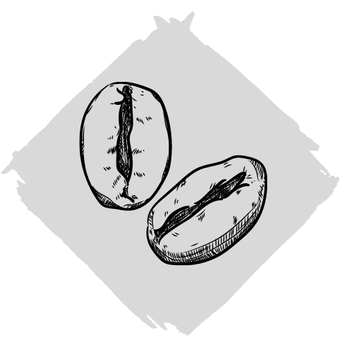

Sin Azucar
Home
Menu
About
Stop with the sugar!
Come make your dreams reality.
Sin Azucar is a space that offers a syncretism of industry and nature.
Each of our vegan cafes is a space for dialogue and thought.
It is our dream to create a place where ideas and people can connect through conversation and wonder.
It is our dream to create a place where ideas and people can connect through conversation and wonder.
